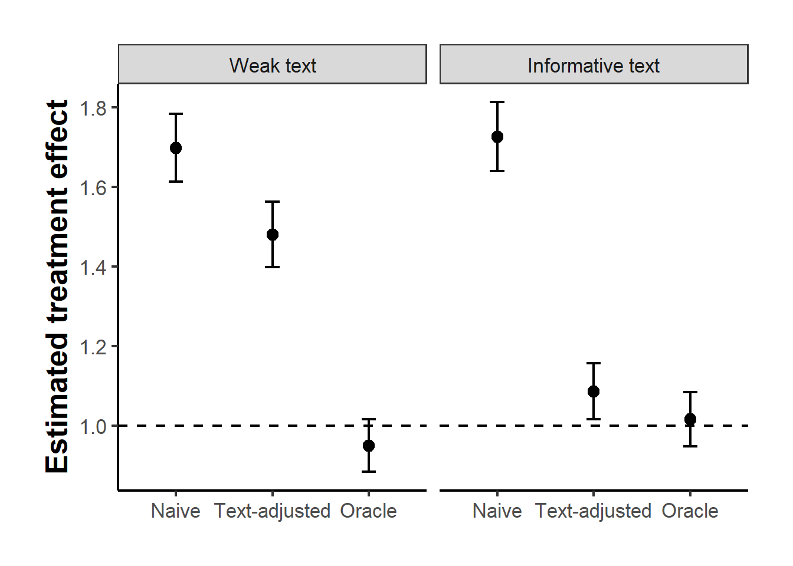
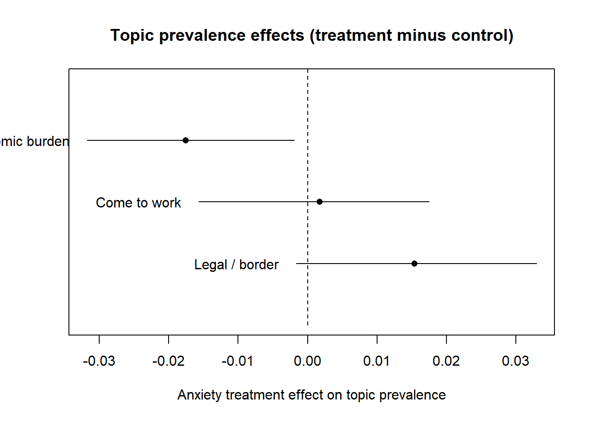
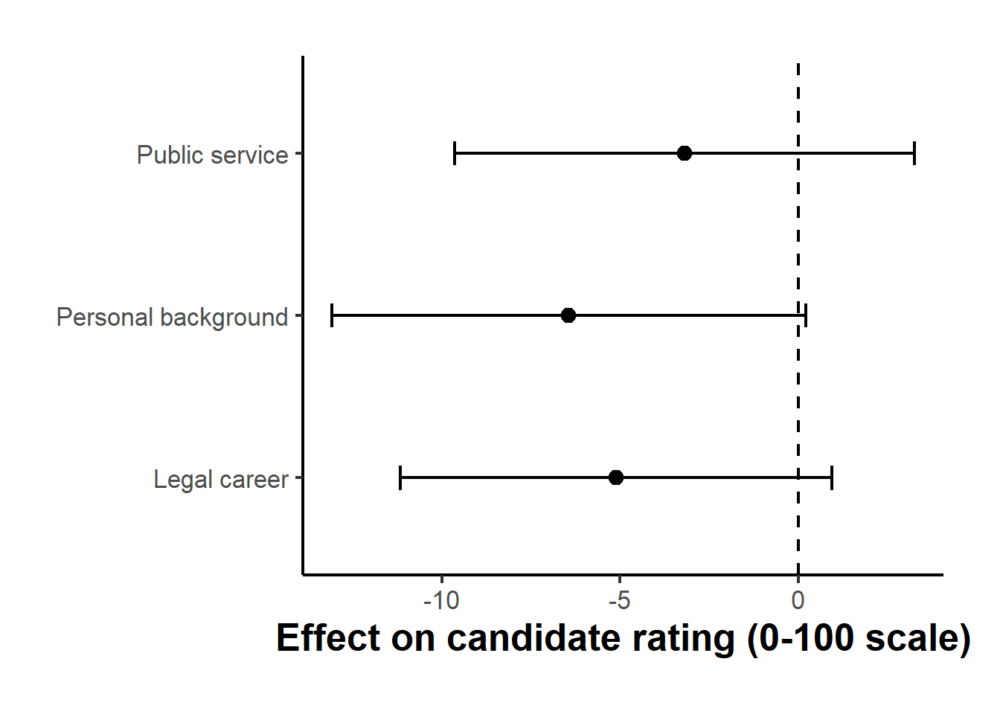
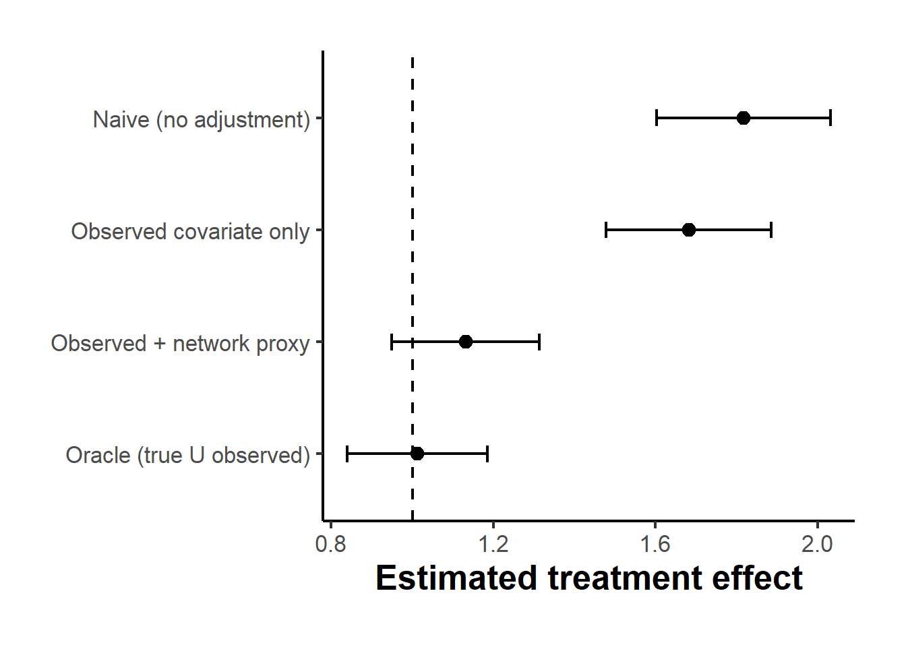
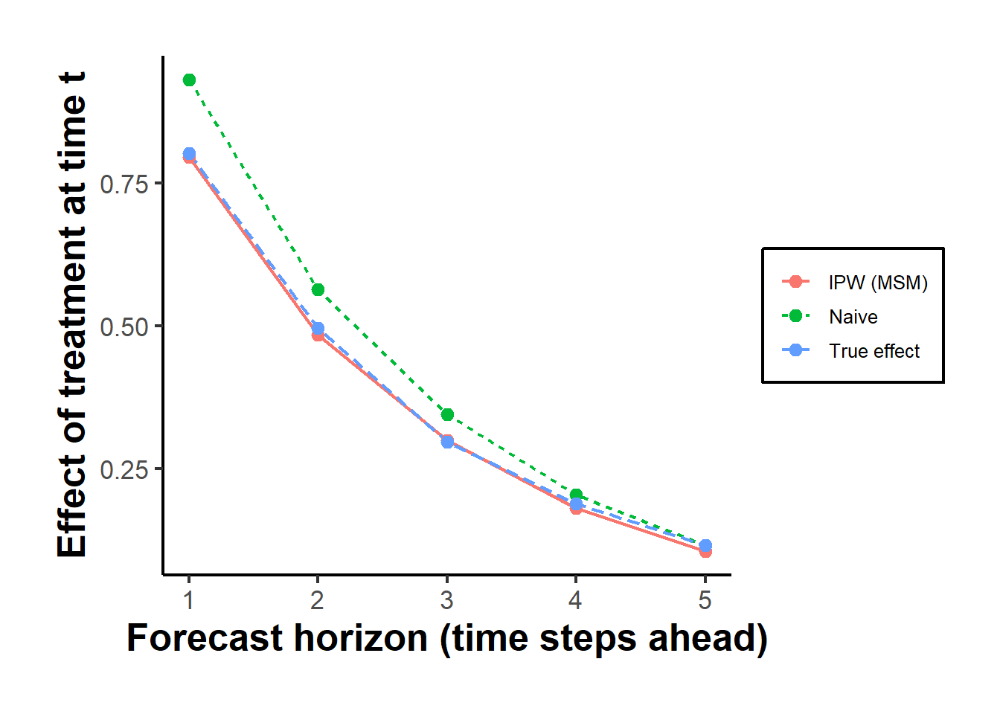

47 Text as Data and NLP for Causal Inference
Much of the information that social scientists, economists, and business analysts care about is locked inside text. Central bank statements, earnings calls, product reviews, court opinions, legislative speeches, news articles, customer support tickets, and physician notes all encode quantities that we would like to measure and reason about. Until recently these documents were either read by hand, at enormous cost and limited scale, or ignored. The combination of cheap digitized corpora and statistical methods for representing language has turned text into a measurement instrument, and that instrument is increasingly used inside causal arguments rather than merely descriptive ones.
This chapter treats text as data in the sense of Gentzkow et al. (2019), whose review in the Journal of Economic Literature frames the core problem clearly. A corpus of documents is extraordinarily high dimensional, the number of possible word sequences vastly exceeds the number of documents, so any useful analysis must impose structure that reduces dimensionality while retaining the signal relevant to the question at hand. The methods differ, but they share a common shape. We map raw documents into a numerical representation, we use that representation to recover a lower dimensional quantity of interest such as sentiment, topic, ideology, or a predicted label, and then we feed that quantity into a downstream statistical model. When the downstream model is causal, the fact that our key variable was estimated from text rather than observed directly creates problems that do not arise when we use a clean administrative measure. Most of this chapter is about those problems and how to manage them.
The supervised side of this enterprise, where text is mapped to a known label, and the unsupervised side, where structure is discovered without labels, are surveyed in the foundational treatment of Grimmer and Stewart (2013), whose central admonition is that automated content methods amplify rather than replace careful human reading and that every such method must be validated rather than trusted. Their warning that no method should be applied without validation runs through everything below, and the book length development in Grimmer et al. (2022), which has become the standard graduate text on the subject, extends that discipline from description to the social scientific inference tasks that occupy this chapter. The newer causal turn in this literature is organized most clearly by Egami et al. (2022), whose Science Advances treatment lays out a framework for what they call making texts count, the deliberate translation of a corpus into the specific quantity a causal estimand requires. Their framing supplies the spine of this chapter. Two ideas in particular recur. The first is that the analyst must commit to a codebook, an explicit definition of the latent quantity the text is meant to measure, before estimating any effect, because a quantity defined after seeing the results is not identified in any useful sense. The second is that the discovery of a text based variable and the estimation of its effect must be separated by a train and test split, so that the flexibility used to read meaning out of language cannot be turned, knowingly or not, into the flexibility to manufacture a finding.
47.1 Why Text Matters for Measurement
The first reason to take text seriously is coverage. Many constructs of genuine economic and political importance have no off the shelf numeric counterpart. The tone of a Federal Reserve statement, the partisanship of a speech, the novelty of a patent, the affect in a customer email, or the presence of a particular policy commitment in a contract are all things we can articulate and recognize but cannot download as a column. Text lets us construct these measures at scale and at low marginal cost, which is precisely the comparative advantage Gentzkow et al. (2019) emphasize.
The second reason is that text often sits causally between things we already observe. A manager reads an analyst report and then makes a decision; a voter reads a campaign message and then turns out or abstains; a consumer reads reviews and then purchases. In each case the text is not a nuisance to be summarized away but a variable with a role in the causal story, sometimes the treatment, sometimes a mediator, sometimes a confounder. Recognizing that role is the difference between a clean estimand and a quantity that no one can interpret.
The third reason is that text frequently records information that would otherwise be unobservable confounding. Two firms that issue similar press releases, two patients whose clinical notes describe similar symptoms, or two litigants whose filings raise similar claims may be comparable on dimensions that structured covariates miss entirely. Using text to adjust for such confounding is appealing, but as we will see it rests on assumptions that are easy to state and hard to defend.
47.2 Representing Text
Every method in this area begins by turning documents into numbers. The simplest and still surprisingly durable representation is the bag of words. A document becomes a vector of counts over a fixed vocabulary, discarding word order entirely. The document term matrix that results is sparse and high dimensional, and it is the starting point for most of what follows. Term frequency inverse document frequency, usually written tf-idf, rescales these counts so that words common across the whole corpus are downweighted and words that distinguish a document are emphasized. Gentzkow et al. (2019) discuss why this crude representation works as well as it does, the key being that for many prediction and classification tasks the marginal distribution of words carries most of the usable signal.
A small bag of words pipeline is easy to build with the tidytext approach, in which a corpus is reshaped into a tidy one row per document per token table and then manipulated with ordinary data tools. The toy example below tokenizes a handful of sentences and counts terms, which is enough to see the shape of a document term matrix without depending on any model download.
library(tidytext)
library(dplyr)
docs <- tibble(
doc_id = c("a", "b", "c"),
text = c(
"the central bank raised rates to fight inflation",
"the central bank cut rates to support growth",
"consumers reported higher inflation expectations"
)
)
# One row per document per token, then term counts.
term_counts <- docs |>
tidytext::unnest_tokens(word, text) |>
dplyr::anti_join(tidytext::get_stopwords(), by = "word") |>
dplyr::count(doc_id, word, sort = TRUE)
term_counts
#> # A tibble: 17 × 3
#> doc_id word n
#> <chr> <chr> <int>
#> 1 a bank 1
#> 2 a central 1
#> 3 a fight 1
#> 4 a inflation 1
#> 5 a raised 1
#> 6 a rates 1
#> 7 b bank 1
#> 8 b central 1
#> 9 b cut 1
#> 10 b growth 1
#> 11 b rates 1
#> 12 b support 1
#> 13 c consumers 1
#> 14 c expectations 1
#> 15 c higher 1
#> 16 c inflation 1
#> 17 c reported 1Bag of words throws away an enormous amount of structure, and the next family of representations tries to recover some of it by positing latent themes. Latent Dirichlet allocation, introduced by Blei et al. (2003), models each document as a mixture over a small number of topics and each topic as a distribution over words. The output is two sets of distributions, one giving the topic shares of each document and one giving the word loadings of each topic, and these low dimensional topic shares are often what a researcher carries into a downstream analysis. Topic models are unsupervised, so the topics that emerge are whatever best explains co-occurrence patterns, and they need not correspond to the construct a researcher has in mind.
The structural topic model of Roberts et al. (2014) extends this idea in a direction that matters for social science. It lets document level covariates such as the author’s party, the publication date, or a treatment indicator shift both the prevalence of topics and the words used within them. This makes the topic model itself a vehicle for asking how text varies with observed characteristics, and Roberts et al. (2014) document the estimation and interpretation workflow in detail. The same caution applies, the recovered topics are model artifacts whose meaning the analyst must validate rather than assume.
A different representation abandons counts in favor of dense vectors that place words in a continuous space where geometric proximity encodes semantic similarity. Word embeddings learned from co-occurrence statistics, as in the GloVe approach of Pennington et al. (2014), map each word to a vector such that words used in similar contexts lie near one another. Document vectors can then be built by aggregating word vectors. Embeddings capture similarity that bag of words misses, the words inflation and prices being close even when they never co-occur in a short document, at the cost of interpretability and of dependence on the corpus the embeddings were trained on.
The current frontier replaces static word vectors with contextual representations produced by transformer models, in which the vector assigned to a word depends on the surrounding sentence. Vaswani et al. (2017) introduced the attention mechanism that underlies these models, and the published computational linguistics literature has since shown that contextual embeddings substantially improve many language tasks. For causal work the relevant point is pragmatic. Transformer embeddings give a richer numeric summary of a document, but they are even less interpretable than topic shares, they are expensive to compute, and the downloads they require mean the code that produces them does not run in a clean lightweight session. None of these representations changes the fundamental inferential problem, which is that the variable we ultimately use is an estimate.
47.3 Three Roles of Text in Causal Inference
It is useful to organize the field by the role text plays in the causal diagram rather than by the algorithm used to process it. Feder et al. (2022) survey this terrain across the computational linguistics and statistics literatures, and they emphasize that the same corpus can sit in very different positions depending on the question.
47.3.1 Text as Treatment
In the first role the text is the cause. A randomized message, an email tone, a framing of a policy, or the readability of a disclosure is varied, and we want its effect on a behavioral outcome. The conceptual difficulty here is that a document is not a scalar. When we say we estimated the effect of a more negative tone, we have implicitly defined a treatment by projecting the document onto one dimension, and many other features of the text moved along with tone. The estimand is the effect of a latent treatment that we have inferred, and unless the text generating process was controlled, that latent feature may be entangled with others.
The cleanest version of this problem arises when researchers manipulate text and then must define the treatment that was actually delivered. Fong and Grimmer (2016) formalize a setting in which the treatment is an unknown function of the text and develop a procedure that discovers treatments and estimates their effects while guarding against the temptation to define the treatment using the same data that estimate its effect. The full identification theory behind that procedure is developed in Fong and Grimmer (2023), who define the estimand precisely as the effect of a latent treatment, give conditions under which it is identified from a randomized text experiment, and show that the discovery step must be carried out on a separate sample for the subsequent effect estimate to be valid. Their central methodological point generalizes well beyond their specific model. If you let the outcome data influence which textual feature you call the treatment, you will find effects whether or not any exist, so the discovery of the treatment and the estimation of its effect must be separated. Egami et al. (2022) sharpen this into a concrete recipe. A discovery split of the corpus is used to read latent treatments out of the text and to fix a codebook that names them; the codebook is then frozen, the latent treatments are measured on a separate split, and only those held-out measurements enter the effect estimate. The split is what licenses the analyst to use unconstrained, data-driven reading on the discovery half without contaminating inference on the other.
A second strategy treats a document as a bundle of separable features and asks for the effect of each, in the spirit of the conjoint designs used to decompose multidimensional treatments. If the text-generating process can be controlled, for instance by composing messages from independently randomized components such as tone, length, source cue, and policy content, then the effect of each component is identified by its own randomization and the entanglement problem dissolves. The harder observational case, where the components are merely measured rather than assigned, returns the analyst to the confounding concerns that occupy the rest of this chapter, because the textual features now covary with one another and with unobserved writer characteristics. Pryzant et al. (2021) give this observational case a careful treatment, defining the causal effect of a single linguistic property, such as politeness or a particular framing, when the property is read from the text by an imperfect classifier and is correlated with other properties of the same document. Their adjustment, which they call TextCause, estimates the linguistic property and the parts of the text that confound its effect within a single procedure and corrects for the fact that the property itself is measured with error, and it makes plain that without such a correction the estimated effect of a linguistic feature is a mixture of its own effect and the effects of everything that travels with it.
The newest practice uses large language models as the instrument that reads latent treatments out of the text, classifying each document for tone, frame, or rhetorical strategy at a scale that hand coding cannot reach. This is powerful and changes nothing about the underlying logic. An LLM label is an estimate of a latent treatment, so the discovery-then-measurement split, the frozen codebook, and the validation against human labels remain mandatory; the model is a faster coder, not a license to skip the design. Two validity concerns deserve separate billing here. Internal validity asks whether the estimated effect is the effect of the feature the codebook names rather than of some correlate that moved with it, which is the entanglement problem restated. External validity asks whether an effect estimated on one corpus, one population of writers, and one model’s reading of the text transports to another, and text based treatments are unusually fragile on this axis because the meaning of a linguistic feature is bound to the linguistic and cultural context in which it was produced.
47.3.2 Text as Outcome
In the second role the text is the consequence. A policy, an intervention, or a treatment is administered, and we measure its effect on what people write or say, the sentiment of reviews after a product change, the topics legislators emphasize after an electoral shock, or the language of disclosures after a regulation. Here the text is summarized into an outcome measure, a sentiment score or a topic share, and that measure is regressed on treatment.
The danger specific to this role is that the measurement model and the treatment can be confounded through the analyst. If the same labeled examples or the same topic model are used to define the outcome and are themselves influenced by treated documents, the recovered outcome can absorb part of the treatment effect into its own construction. The structural topic model framework of Roberts et al. (2014) is often used in exactly this setting, with treatment as a prevalence covariate, and the resulting topic prevalence effects must be read as effects on a model defined quantity rather than on a pre-specified objective measure.
47.3.3 Text as Confounder or Control
In the third role text is neither cause nor effect but a record of confounding. Two units that received different treatments may differ on characteristics that are written down in their documents but absent from structured data, and adjusting for those textual characteristics promises to close a backdoor path that we could not otherwise close. This is the most seductive and the most dangerous use of text. Feder et al. (2022) and the methods they review make clear that using text to adjust for confounding requires that the text actually contain the confounder and that our representation recover it well enough to deconfound, two conditions that are jointly difficult to verify. Keith et al. (2020) devote a full review to precisely this use of text, cataloguing the methods that have been proposed to remove confounding with text and, more usefully, the assumptions each one quietly relies on, and their central message is sobering, that the key conditions, the text containing the confounder and the representation recovering it, are largely untestable, so the credibility of a text-deconfounded estimate rests on argument and validation rather than on any statistic the data can produce.
The core tension is one of dimensionality and overlap. The text representation that is rich enough to capture a subtle confounder is typically so high dimensional that no two units share it, which destroys the overlap that adjustment requires. The representation that is coarse enough to permit overlap, a handful of topics, may not contain the confounder at all. Methods in this area, including those built on supervised dimension reduction and on double machine learning ideas in the spirit of Chernozhukov, Chetverikov, et al. (2018), try to learn a representation that retains exactly the part of the text relevant to both treatment and outcome, but the validity of the resulting adjustment depends on assumptions about what the text captures that data alone cannot test.
Two families of representation are used as confounder proxies. The first uses topic models, the latent Dirichlet allocation of Blei et al. (2003) or the structural topic model of Roberts et al. (2014), and treats the estimated topic shares as a low dimensional summary of the document to condition on. Roberts et al. (2020) build matching directly on this idea, projecting documents into a topic space and matching treated to control units that are close in that space, which restores overlap by construction while retaining the textual information the topics encode. Their text matching estimator is the canonical worked instance of using text to close a backdoor path, and it makes the central assumption visible: adjustment is valid only if the topics span the confounding, a substantive claim about the corpus that no amount of data can verify on its own. Mozer et al. (2020) put the matching step itself under experimental scrutiny, comparing the document representations and distance metrics an analyst might use and, importantly, asking human readers to judge whether matched pairs are genuinely similar, and they find that matches which look close in a topic or embedding space are often substantively mismatched, a reminder that match quality in text is a claim about meaning that ultimately has to be checked by reading rather than asserted from a distance metric. The second family uses text embeddings, the dense vectors of Pennington et al. (2014) or their contextual successors, as the proxy. Veitch et al. (2020) show how to adapt such embeddings for causal adjustment, fine-tuning the representation so that it predicts both treatment and outcome and thereby retains the part of the text that lies on the backdoor path while discarding the rest.
This last point exposes a subtle failure mode that is easy to create and hard to detect. A representation learned to be predictive can leak the treatment, encoding so much treatment-relevant information that conditioning on it induces the kind of overadjustment that destroys overlap or, worse, blocks a path that should remain open. The goal is a representation that is causally sufficient, one that captures the confounding part of the text and only that part. Veitch et al. (2020) frame this explicitly as the search for a sufficient adjustment, a representation rich enough to deconfound yet disciplined enough not to absorb the treatment itself, and they show that naively maximizing predictive accuracy does not deliver it. The lesson is that the representation is not a neutral preprocessing step but a modeling choice with its own identifying assumptions.
Once a low dimensional, causally sufficient representation of the text is in hand, the downstream estimation problem is the standard one of adjusting for a high dimensional set of controls, and the tools of the machine learning for causal inference chapter (Chapter 45) apply directly. Double or debiased machine learning in the sense of Chernozhukov, Chetverikov, et al. (2018) is the natural estimator here. The text representation enters as the covariate vector, flexible learners estimate the outcome regression and the treatment propensity as nuisance functions, Neyman orthogonality makes the treatment effect estimate first-order insensitive to errors in those nuisances, and cross-fitting prevents the overfitting that the high dimensionality of text would otherwise inject. The cross-fitting of double machine learning and the train and test split of Egami et al. (2022) are the same discipline applied at two stages, learning the representation on one fold and estimating the effect on another, and together they are what make text-adjusted estimates trustworthy rather than merely flexible.
47.4 Estimands and Identification When Variables Come From Text
The unifying lesson across all three roles is that a variable estimated from text is not the same as a variable observed directly, and treating it as if it were observed is the source of most errors in this literature. Three issues deserve explicit attention.
The first is measurement error. When sentiment, topic, or a class label is predicted from text, the prediction differs from the truth, and that error propagates into the downstream causal estimate. If the text derived variable is a regressor, classical measurement error attenuates its coefficient toward zero, but the error in text based measures is rarely classical. Predictions are correlated with the very features that drive the outcome, so the bias can go in either direction and need not shrink as the corpus grows. Wood-Doughty et al. (2018) make this concrete for the common case in which a classifier supplies a treatment or outcome, showing that even a fairly accurate text classifier injects a bias into the downstream causal estimate that does not vanish with sample size and whose sign depends on how the classification error correlates with the other variables in the model, and they trace the problem to the fact that the error in a text classifier is systematic rather than noise. Gentzkow et al. (2019) are explicit that the high dimensionality of text makes naive plug-in estimation prone to overfitting, and that the predicted quantity inherits the idiosyncrasies of the model that produced it.
The second is researcher degrees of freedom. A text pipeline involves dozens of choices, the vocabulary, the stemming, the number of topics, the labeled training set, the threshold that turns a probability into a class, and each choice can be tuned, knowingly or not, toward a desired result. Because these choices are made on the same documents that enter the analysis, the space of defensible specifications is large enough that almost any conclusion can be reached. The discipline that Fong and Grimmer (2016) impose, separating the construction of the text variable from the estimation of its effect, is the main defense against this, and it is closely related to the broader machine learning for causal inference practice surveyed by Athey and Imbens (2019) of using one part of the data to learn nuisance functions and another to estimate effects.
The third is the danger of in-sample fitting. A model that is trained and then applied on the same documents will produce a text variable that is mechanically related to the outcome through the shared sample. The remedy is the standard one from prediction, hold out a portion of the data. Labels and topic models should be learned on a training split, the resulting measurement model should be applied to a separate split, and causal estimation should use only the held-out measurements. This sample splitting is the textual analogue of the cross-fitting that makes double machine learning estimators well behaved in Chernozhukov, Chetverikov, et al. (2018), and it converts an uncontrolled overfitting problem into one with valid out-of-sample behavior.
Closely tied to sample splitting is the case for held-out human measurement. Because every automated text measure is an estimate, its quality has to be established against a gold standard that humans produce on documents the model never saw. Hand coding a validation sample, comparing the model’s labels to the human labels, and reporting that agreement is not optional polish, it is the only evidence that the construct being measured is the construct claimed. Some recent methods go further and use a small validated sample to correct the bias that an imperfect classifier introduces into the downstream estimate, which makes explicit that the validation data are doing inferential work, not just reassuring the reader.
47.5 A Worked Example of Text-Based Confounding Adjustment
The clearest way to see why a text representation can rescue a causal estimate, and just as importantly why it often fails to, is to build a small data generating process in which a confounder is recorded only in the words of each document. The simulation below creates documents whose term frequencies depend on a binary latent confounder. That same confounder drives both the probability of treatment and the level of the outcome, so a naive comparison of treated and control outcomes is biased. The confounder itself is never placed in a clean column; it survives only in the word counts, exactly the situation in which text-based adjustment is supposed to help.
The single most important fact about this procedure, and the one that a careless demonstration hides, is that conditioning on text deconfounds only to the extent that the words actually pin down the confounder. The document term matrix is a noisy proxy for the latent confounder, and adjusting for a noisy proxy removes only part of the confounding, leaving a residual bias that does not disappear as the corpus grows. This is the measurement-error-in-controls problem that Wood-Doughty et al. (2018) warn about, transposed to the confounder. To make the point honestly we run the same design twice, once where the confounder leaves only a weak trace in the text and once where it leaves a strong one, and we let the numbers show that the weak case is not rescued.
We keep the example compact so that it runs in a base R session augmented only with packages confirmed to be available in the project library. The document term matrix is constructed by direct simulation rather than by tokenizing real text, which lets the example isolate the inferential point.
set.seed(2026)
n <- 4000 # documents
V <- 40 # vocabulary size
tau <- 1 # true treatment effect, fixed at one throughout
# Simulate a corpus in which a binary latent confounder U is recorded only in
# the words. `informative` toggles how strongly U marks the text.
simulate_corpus <- function(informative) {
U <- rbinom(n, 1, 0.5)
if (!informative) {
# Weak trace: each confounder-laden term is a rare binary flag, so any one
# document's words barely identify U. This is the realistic, hard case.
word_prob <- matrix(0.05, nrow = n, ncol = V)
word_prob[, 1:10] <- 0.05 + 0.12 * U
X <- matrix(rbinom(n * V, size = 1, prob = word_prob), nrow = n, ncol = V)
} else {
# Strong trace: confounder-laden terms recur as counts, so the bag of words
# nearly reveals U. This is the favorable case that makes adjustment work.
lambda <- matrix(0.3, nrow = n, ncol = V)
lambda[, 1:15] <- 0.3 + 2.0 * U
X <- matrix(rpois(n * V, lambda), nrow = n, ncol = V)
}
colnames(X) <- paste0("term", seq_len(V))
# Treatment depends on the latent confounder, not on the words directly.
D <- rbinom(n, 1, plogis(-0.5 + 1.6 * U))
# Outcome: true effect tau = 1; U adds a confounding shift of 2.
Y <- 0.5 + tau * D + 2 * U + rnorm(n)
data.frame(Y = Y, D = D, U = U, X)
}For each corpus we compute three estimates of the treatment effect. The naive estimate regresses the outcome on treatment alone and ignores the text; because treated documents are drawn disproportionately from the high confounder group, it inherits the confounding shift and overstates the effect. The text-adjusted estimate conditions on the entire bag-of-words representation in place of the unobserved confounder. The oracle estimate adjusts for the true confounder, which no real analyst would have, and marks the target the text-adjusted estimator is trying to reach.
estimate_all <- function(dat) {
term_names <- grep("^term", names(dat), value = TRUE)
form_text <- as.formula(paste("Y ~ D +", paste(term_names, collapse = " + ")))
pull <- function(fit) summary(fit)$coefficients["D", c("Estimate", "Std. Error")]
rbind(
Naive = pull(lm(Y ~ D, data = dat)),
`Text-adjusted` = pull(lm(form_text, data = dat)),
Oracle = pull(lm(Y ~ D + U, data = dat))
)
}
to_df <- function(mat, scenario) {
data.frame(
Scenario = scenario, Estimator = rownames(mat),
Estimate = mat[, 1], `Std. Error` = mat[, 2],
check.names = FALSE, row.names = NULL
)
}
results <- rbind(
to_df(estimate_all(simulate_corpus(informative = FALSE)), "Weak text"),
to_df(estimate_all(simulate_corpus(informative = TRUE)), "Informative text")
)
results$Bias <- results$Estimate - tauTable 47.1 reports both scenarios against the known truth of one. In both, the naive estimate is badly biased upward, near 1.7, because the words that signal the confounder also predict treatment and ignoring them leaves the backdoor path open. The decisive contrast is in the text-adjusted row. When the confounder leaves only a weak trace, conditioning on the bag of words removes barely a third of the bias and the estimate sits near 1.5, nowhere close to the truth, because the sparse binary terms are too noisy a proxy to close the path. Only when the text carries a strong, redundant signal of the confounder does the same adjustment land near one. The oracle is close to one in both cases, confirming that the failure in the weak case is a failure of the proxy, not of the design.
| Scenario | Estimator | Estimate | Std. Error | Bias |
|---|---|---|---|---|
| Weak text | Naive | 1.697 | 0.043 | 0.697 |
| Weak text | Text-adjusted | 1.480 | 0.042 | 0.480 |
| Weak text | Oracle | 0.950 | 0.034 | -0.050 |
| Informative text | Naive | 1.726 | 0.044 | 0.726 |
| Informative text | Text-adjusted | 1.086 | 0.036 | 0.086 |
| Informative text | Oracle | 1.017 | 0.035 | 0.017 |
Figure 47.1 makes the contrast visible. In the left panel the text-adjusted point sits well above the dashed line of the true effect, only modestly below the naive point; the bag of words was not enough. In the right panel it falls onto the line beside the oracle. The same estimator, the same code, opposite verdicts, decided entirely by how much of the confounder the text actually contains.
library(ggplot2)
plot_df <- results
plot_df$Estimator <- factor(plot_df$Estimator,
levels = c("Naive", "Text-adjusted", "Oracle"))
plot_df$Scenario <- factor(plot_df$Scenario,
levels = c("Weak text", "Informative text"))
plot_df$lower <- plot_df$Estimate - 1.96 * plot_df$`Std. Error`
plot_df$upper <- plot_df$Estimate + 1.96 * plot_df$`Std. Error`
ggplot(plot_df, aes(x = Estimator, y = Estimate)) +
geom_hline(yintercept = tau, linetype = "dashed") +
geom_point(size = 3) +
geom_errorbar(aes(ymin = lower, ymax = upper), width = 0.15) +
facet_wrap(~ Scenario) +
labs(x = NULL, y = "Estimated treatment effect") +
causalverse::ama_theme()
Figure 47.1: Estimated treatment effects with ninety-five percent confidence intervals in two corpora. The dashed line is the true effect of one. With only a weak textual trace of the confounder (left) the text-adjusted estimate remains badly biased; only when the text strongly encodes the confounder (right) does adjustment recover the truth.
The two panels are the whole lesson. Text-based adjustment is not a generic fix for confounding; it is an adjustment for whatever part of the confounder the representation happens to recover, and when that part is small the estimate stays biased while looking superficially principled. The weak case is the common one, which is why the literature does not stop at throwing the raw document term matrix into a regression. As the representation grows toward the dimensionality needed to capture a subtle confounder, the overlap that linear adjustment relies on begins to fail, and the analyst is pushed toward the topic-space matching of Roberts et al. (2020), the human-validated match quality of Mozer et al. (2020), the sufficient embedding of Veitch et al. (2020), or the cross-fitting machinery of Chernozhukov, Chetverikov, et al. (2018) precisely to manage that failure. The simulation shows the mechanism in both its favorable and its unfavorable form; the cited methods exist because the unfavorable form is the one analysts usually face.
47.6 A Real-Data Replication: Estimating Effects on What People Write
The confounding simulation isolates a mechanism, but the gold standard for this literature is a study on real text, and the canonical worked example is the structural topic model of Roberts et al. (2014) applied to a randomized experiment, implemented in the stm package documented by Roberts et al. (2019). The data come from Gadarian and Albertson (2014), who randomly assigned survey respondents either to a condition designed to induce anxiety about immigration or to a control condition, and then collected open-ended written responses about immigration. The text is the outcome: we want the effect of the anxiety treatment on what people choose to write about. This is the text-as-outcome role made concrete, with a genuine randomization that identifies the effect and a real corpus that the model must summarize into an outcome we can regress on treatment.
The workflow has three steps that mirror the general recipe. We first turn the raw responses into a document term matrix, stemming words and dropping rare terms. We then fit a structural topic model in which the treatment indicator enters as a prevalence covariate, so the model is told to look for the dimension of topical variation that the experiment moved. The spectral initialization makes the fit deterministic, which matters for a replication that must render the same way every time. The covariate pid_rep, party identification, is included as a flexible control exactly as in the package’s own vignette.
library(stm)
data(gadarian)
# 1. Process the open-ended responses into a document term matrix.
processed <- textProcessor(gadarian$open.ended.response,
metadata = gadarian, verbose = FALSE)
out <- prepDocuments(processed$documents, processed$vocab,
processed$meta, verbose = FALSE)
# 2. Fit a 3-topic structural topic model with the anxiety treatment as a
# prevalence covariate. Spectral init is deterministic, so the fit is
# reproducible without depending on a random seed.
stm_fit <- stm(out$documents, out$vocab, K = 3,
prevalence = ~ treatment + s(pid_rep),
data = out$meta, max.em.its = 75,
init.type = "Spectral", verbose = FALSE)
# 3. Regress topic prevalence on the treatment to get the causal estimates.
stm_eff <- estimateEffect(1:3 ~ treatment + s(pid_rep), stm_fit,
meta = out$meta, uncertainty = "Global")The three topics that emerge are readable. Reading the highest-probability words off each topic, the first is an economic-burden frame about illegal immigration, jobs, and American workers; the second is a frame about people coming to the country to work and what they pay or receive; the third is a legal-and-enforcement frame about legal immigration, the border, and taxes. Table 47.2 reports, for each topic, the effect of the anxiety treatment on that topic’s prevalence, which is the quantity Roberts et al. (2014) call a topic prevalence effect.
| Topic | Top words | Estimate | Std. Error | p-value |
|---|---|---|---|---|
| 1 | illeg, peopl, job, think, american | -0.018 | 0.007 | 0.020 |
| 2 | countri, come, work, pay, dont | 0.002 | 0.008 | 0.822 |
| 3 | immigr, legal, get, border, tax | 0.016 | 0.009 | 0.078 |
The pattern is substantively coherent and matches the logic of the original experiment. Inducing anxiety about immigration shifts what respondents write: prevalence of the economic-burden topic falls while prevalence of the legal-and-enforcement topic rises, the latter being the threat-focused, security-oriented language that anxiety is theorized to provoke. Figure 47.2 plots the estimated treatment-minus-control difference in prevalence for each topic with its uncertainty, the package’s standard way of displaying a topic prevalence effect.
plot(stm_eff, covariate = "treatment", topics = 1:3, model = stm_fit,
method = "difference", cov.value1 = 1, cov.value2 = 0,
xlab = "Anxiety treatment effect on topic prevalence",
main = "Topic prevalence effects (treatment minus control)",
labeltype = "custom",
custom.labels = c("Economic burden", "Come to work", "Legal / border"))
Figure 47.2: Estimated effect of the anxiety treatment on the prevalence of each topic in the Gadarian and Albertson experiment, as treatment-minus-control differences with ninety-five percent intervals. Points to the right of zero are topics the treatment makes more prevalent.
Two caveats keep this honest and connect it back to the chapter’s argument. First, the outcome here is a model-defined quantity: the topics are an artifact of a particular STM fit, and a different number of topics or a different preprocessing choice would yield different, though usually related, prevalence effects, which is why Roberts et al. (2014) insist that the topics be validated by reading representative documents rather than trusted from their word lists alone. Second, the randomization is what licenses the causal reading. Because treatment was assigned, the prevalence effect is identified despite the outcome being estimated from text; in an observational version of this study, the confounding concerns of the previous section would return in full force. The replication is a clean instance of the text-as-outcome role precisely because the experiment supplies the identification and the text supplies only the measurement.
47.7 A Real-Data Replication: Discovering Treatments From Text
The structural topic model puts text in the outcome role. The harder and more distinctive role is text as treatment, and the cleanest way to see it is on the data that motivated this literature: the Wikipedia candidate-biography experiment of Fong and Grimmer (2016), whose identification theory is developed in Fong and Grimmer (2023). Respondents read short biographies of hypothetical political candidates and rated each candidate, so the document is the treatment and the rating is the outcome. The analyst does not know in advance which features of a biography matter; the method discovers candidate treatments from the text and then estimates their effects, with the discovery and the estimation walled off from each other by a sample split, exactly the design Egami et al. (2022) formalize. We bundle a sample of five hundred respondents as data/bio_biographies.csv, where the candidate rating is in the resp column and the remaining columns hold the word counts of the biography each respondent saw.
The original analysis used a supervised Indian Buffet Process, distributed in the authors’ texteffect package, which has since been archived from CRAN for an administrative reason (an undeliverable maintainer email) rather than a technical failure, and is still installable from source with remotes::install_github("cran/texteffect") for readers who want to run the original method directly. Rather than depend on an archived package, we reproduce the same two-stage design with the actively maintained text2vec, whose latent Dirichlet allocation plays the role of the discovery model. The logic is identical and is the throughline of this chapter: on the training half a topic model discovers a small number of latent themes in the biographies, those themes are named from their words and frozen into a codebook, and only then are their effects estimated on the held-out half. Because the discovery model never sees the estimation data, the flexibility used to read themes out of the text cannot manufacture the effects we report.
library(text2vec)
library(Matrix)
# Quiet text2vec's iteration logging so the chunk output stays clean.
try(lgr::get_logger("text2vec")$set_threshold("warn"), silent = TRUE)
bio <- read.csv("data/bio_biographies.csv")
set.seed(1)
Y <- bio$resp # candidate rating (outcome)
DTM <- as.matrix(bio[, setdiff(names(bio), "resp")]) # biography word counts
# Split: discovery on the training half, estimation on the held-out half.
n <- nrow(DTM)
train <- sample(n, floor(n / 2))
test <- setdiff(seq_len(n), train)
# Discover K = 3 latent themes from the training biographies only.
K <- 3
lda <- LDA$new(n_topics = K, doc_topic_prior = 0.1, topic_word_prior = 0.01)
lda$fit_transform(Matrix(DTM[train, ], sparse = TRUE), n_iter = 300,
convergence_tol = 1e-4, progressbar = FALSE)The discovered themes are interpreted, as always, by reading their most characteristic words. Table 47.3 lists the top words loading on each of the three latent themes the model found on the training split.
| Theme 1: public service | Theme 2: personal background | Theme 3: legal career |
|---|---|---|
| national | father | law_school |
| service | children | district |
| born | worked | school_law |
| elected | republican | law |
| united_states | family | city |
| served | company | member |
| state_university | house | graduated |
| high_school | married | attended |
With the themes fixed by the codebook these word lists imply, we turn each into a binary treatment on the held-out half: a biography expresses a theme if its share of that theme, projected onto the frozen topic model, exceeds the theme’s training-set median. Regressing the rating on the three theme indicators gives the effect of a biography expressing each theme, the average marginal component effect, estimated entirely on data the discovery step never touched. Table 47.4 reports those effects.
| Treatment | Effect on rating | 95% CI lower | 95% CI upper |
|---|---|---|---|
| Theme 1: public service | -3.19 | -9.64 | 3.26 |
| Theme 2: personal background | -6.44 | -13.08 | 0.20 |
| Theme 3: legal career | -5.12 | -11.17 | 0.94 |

Figure 47.3: Estimated effects of the three text-discovered themes on candidate ratings, with ninety-five percent confidence intervals, computed on the held-out estimation sample. Effects are in rating points on a zero-to-one-hundred scale; the dashed line is the no-effect mark.
The point estimates in Figure 47.3 are modest and negative relative to a plain biography, and every confidence interval comfortably includes zero, which is exactly what one should expect and report honestly here. The bundled sample holds only five hundred respondents and is split in half before anything is estimated, so the estimation sample is small and the held-out effects cannot be distinguished from zero; the full Fong and Grimmer corpus, with far more respondents, is what sharpens these same effects into precise estimates. The point of the replication is not the significance of any one theme but the design: the themes were discovered on data the effect estimates never touched, which is the single discipline that separates a credible text-as-treatment finding from an artifact of having searched the same data for both the treatment and its effect. That is the lesson Egami et al. (2022) built their framework around, and reproducing it on their data with a maintained discovery model is the most direct way to internalize it.
47.8 Practical Workflow and Pitfalls
A defensible text-as-data causal study tends to follow the same sequence regardless of the specific representation. Begin by writing down the causal diagram and locating the text in it, deciding before touching the data whether the text is the treatment, the outcome, or a control, because that decision determines the estimand and the assumptions. Construct the document term representation next, making the preprocessing choices explicit and, where possible, fixed in advance so they cannot be tuned to the result. Split the corpus, reserving documents for training the measurement model, for validating it against human coding, and for the final causal estimation, so that no document ever serves two roles. Estimate or apply the measurement model on the appropriate split, carry the resulting low dimensional measure into the causal model, and propagate the measurement uncertainty into the final standard errors rather than treating the estimated variable as if it were observed without error.
Several pitfalls recur often enough to name. The first is treating a predicted label as ground truth, which understates uncertainty and can bias point estimates when the prediction error correlates with the outcome. The second is letting the topic model or classifier see the full corpus, including the outcome relevant documents, before the causal step, which reintroduces the overfitting that splitting was meant to remove. The third is overinterpreting unsupervised topics, reading a substantive story into clusters that the algorithm produced to fit word co-occurrence and that may not be stable across reasonable specifications, a point that the structural topic model documentation of Roberts et al. (2014) is careful to raise. The fourth is the overlap failure described above, where a representation rich enough to capture a confounder is too high dimensional for any comparison to be made. The fifth is the portability problem with embeddings, where vectors trained on one corpus encode associations specific to that corpus and import them silently into a new application.
The same discipline applies to the multimethod designs now common in information systems research, which combine machine learning with econometrics. A. Huang et al. (2026) do this in a study of workflow automation in open-source software development, using machine learning together with econometric methods to estimate how two forms of automation affect maintenance-oriented versus development-oriented innovation. Whenever the machine learning step produces a variable that enters the econometric step, such as a classification of work into exploitative and explorative types, the pitfalls above carry over: the classifier should be validated against human coding, and its error should be propagated into the final inference, for instance with the corrections discussed in the endogeneity chapter.
None of these pitfalls argues against using text. They argue for the same humility that good measurement always demands. Text gives us access to quantities that were previously unmeasurable, and Gentzkow et al. (2019) are right that this expands the reach of empirical economics and social science considerably. The price is that the variable we analyze is the output of a model, and a credible causal claim built on text has to treat that output as an estimate, validate it against something external, and design the study so that the act of measuring the variable cannot manufacture the effect we then claim to have found.
47.9 Modern Practice with Embeddings and Large Language Models
The practical landscape has shifted quickly. Where a decade ago an analyst would hand code a few hundred documents or fit a topic model, the default first move is now to hand the corpus to a pretrained embedding model or a large language model and ask it to produce a measure, a sentiment score, a frame label, a topic, or a judgment of whether a document contains some construct of interest. These tools are genuine advances. They read context, they generalize across phrasings that a bag of words would treat as unrelated, and they make measures feasible at scales that were previously out of reach. None of that changes the inferential status of what they produce, which remains an estimate of a latent quantity and not the quantity itself.
The discipline that makes such measures usable in a causal argument is validation against human labels, and the framework of Egami et al. (2022) makes the requirement precise rather than aspirational. A model derived label is admissible as a treatment, outcome, or confounder proxy only to the extent that its agreement with careful human coding has been measured on documents the model did not help define. The validation sample is not decorative. When the classifier is imperfect, and it always is, the validated subsample is what lets the analyst correct the bias that the measurement error would otherwise inject into the effect estimate, which is why Egami et al. (2022) treat the human-coded data as doing inferential work rather than merely reassuring the reader. A large language model that labels a million documents still needs a few hundred of those documents read by a human, and the reported agreement on that holdout is the evidence that the construct measured is the construct claimed.
Two cautions are specific to the large language model era and have no clean analogue in the topic-model workflow. The first is prompt stability. A measure produced by prompting a model is a function of the exact wording of the prompt, and small, semantically innocuous changes to that wording can move the labels enough to move the downstream estimate. A defensible study fixes the prompt in advance, reports it verbatim, and ideally checks that the conclusions survive reasonable paraphrases of it, treating the prompt as a preprocessing choice that must be pinned down before the data are analyzed rather than tuned afterward. The second is reproducibility. Commercial models are updated and occasionally retired, their outputs can be nondeterministic even at fixed settings, and a measure produced today may not be reproducible next year. The mitigations are mundane and essential, recording the model version and decoding parameters, fixing seeds and temperature where the interface allows, archiving the raw model outputs alongside the derived measures, and where feasible preferring an open model whose weights can be retained so that the measurement step can be rerun. Because any call to such a model depends on an external service and on packages outside the project library, the code that would implement it is shown for reference only and is not run as part of this book.
# Illustrative only. Requires an API client and network access, so this chunk
# is not evaluated. The pattern: fix a prompt, label documents, then validate
# the labels against a human-coded holdout before using them downstream.
label_with_llm <- function(text, prompt_template, model = "a-fixed-model-version") {
# Pseudocode: send prompt_template + text to the model and parse a 0/1 label.
# In a real study: pin the model version, set temperature = 0, set a seed,
# and archive the raw responses so the step can be reproduced.
stop("Provide a real client; this is a template, not a runnable call.")
}
# A human-coded validation sample drives the bias correction. The reported
# agreement between machine and human labels is the evidence that the measure
# is trustworthy enough to carry into the causal model.
# human_labels <- read_validation_sample()
# machine_labels <- vapply(validation_docs, label_with_llm,
# FUN.VALUE = numeric(1),
# prompt_template = my_prompt)
# agreement <- mean(human_labels == machine_labels)47.9.1 Design-Based Supervised Learning: Making Imperfect Labels Safe
Reporting the agreement between machine and human labels establishes that a measure is decent, but it does not by itself fix the bias that an imperfect measure injects into a downstream estimate, and a high agreement rate is not the same as no bias. The problem, recall from Wood-Doughty et al. (2018), is that classifier error is systematic rather than random noise, so plugging the machine labels into a regression as if they were the truth produces an estimate that is biased in a direction that depends on how the errors correlate with the rest of the model, and the bias does not shrink as the labeled corpus grows. Egami et al. (2023) give this problem a clean and general solution that is tailor-made for the large language model era, which they call design-based supervised learning, or DSL. The idea is to label every document with the cheap imperfect classifier, hand-code a random subsample with known sampling probability, and combine the two into a bias-corrected pseudo-outcome that delivers a consistent estimate no matter how good or bad the classifier is, with valid standard errors, as long as the gold-standard subsample was sampled by a known design.
The construction is a doubly robust one. Let \(Q_i\) be the machine label available for every document, \(Y_i^{\ast}\) the gold label available only on the sampled subset, \(R_i\) the indicator that document \(i\) was hand-coded, and \(\pi_i\) the known probability of being sampled. Fit a correction model \(\hat g\) that predicts the gold label from the machine label and the covariates using the labeled subsample, then form \[\tilde Y_i = \hat g(X_i, Q_i) + \frac{R_i}{\pi_i}\bigl(Y_i^{\ast} - \hat g(X_i, Q_i)\bigr),\] and run the intended analysis with \(\tilde Y_i\) in place of the unobserved \(Y_i^{\ast}\). Because the second term has conditional mean zero by the known sampling design, \(\tilde Y_i\) is an unbiased signal of the true label whatever errors the classifier makes; the classifier only affects efficiency, not bias. The simulation below builds a case with deliberately differential classifier error, an LLM-style labeler that over-flags treated documents, so that the naive surrogate estimate is badly biased, and shows that DSL removes the bias while using far fewer human labels than a gold-only analysis would need for the same precision.
# One replication of three estimators of the effect of a covariate D on a
# latent text label Y*: (i) surrogate-only, using the imperfect machine label Q
# for everyone; (ii) gold-only, using just the hand-coded subsample; (iii) DSL,
# combining all machine labels with the gold subsample (Egami et al. 2023).
one_rep <- function(seed) {
set.seed(seed)
n <- 6000
D <- rbinom(n, 1, 0.5) # covariate of interest
Ystar <- rbinom(n, 1, plogis(-0.2 + 0.8 * D)) # TRUE latent label
beta_true <- coef(lm(Ystar ~ D))[["D"]] # estimand we wish we had
# Imperfect classifier Q with DIFFERENTIAL error: it over-flags treated docs,
# so the surrogate-only estimate is systematically biased, not just noisy.
fp <- ifelse(D == 1, 0.40, 0.05) # false-positive rate
fn <- 0.15 # false-negative rate
Q <- ifelse(Ystar == 1, rbinom(n, 1, 1 - fn), rbinom(n, 1, fp))
# Human-validated sample: random subset with KNOWN probability pi.
pi <- 0.10
R <- rbinom(n, 1, pi); lab <- R == 1
dd <- data.frame(Ystar, D, Q)
b_surr <- coef(lm(Q ~ D))[["D"]] # (i) plug in Q
b_gold <- coef(lm(Ystar ~ D, data = dd[lab, ]))[["D"]] # (ii) gold subsample
# (iii) DSL bias-corrected pseudo-outcome.
g_hat <- predict(lm(Ystar ~ D * Q, data = dd[lab, ]), newdata = dd)
Ytilde <- g_hat + (R / pi) * (Ystar - g_hat)
b_dsl <- coef(lm(Ytilde ~ D))[["D"]]
c(Surrogate = b_surr - beta_true,
`Gold-only` = b_gold - beta_true,
DSL = b_dsl - beta_true)
}
# Repeat over many draws so that bias, a property of the sampling distribution,
# is visible rather than a single noisy realization.
bias_mat <- t(vapply(seq_len(200), one_rep, numeric(3)))
dsl_summary <- data.frame(
Estimator = colnames(bias_mat),
`Mean bias` = round(colMeans(bias_mat), 4),
`SD across reps` = round(apply(bias_mat, 2, sd), 4),
check.names = FALSE, row.names = NULL
)| Estimator | Mean bias | SD across reps |
|---|---|---|
| Surrogate | 0.0837 | 0.0103 |
| Gold-only | -0.0005 | 0.0359 |
| DSL | -0.0020 | 0.0276 |
Table 47.5 separates two things that are easy to conflate. The surrogate-only estimator is precise, with a small spread across replications, but it is centered far from the truth: its bias is systematic, and no amount of additional machine-labeled data would move it, which is exactly the trap that a high classifier accuracy invites an analyst to walk into. The gold-only estimator is unbiased but noisy, because it discards ninety percent of the corpus. DSL is centered on the truth like the gold-only estimator yet appreciably tighter, because it borrows strength from the machine labels on the documents that were never hand-coded. This is the quantitative case for the validation sample doing inferential work: a few hundred human labels, combined correctly, buy an estimate that is both honest and efficient, where the same labels used alone would be honest but imprecise and the machine labels used alone would be precise but wrong.
The throughline of the chapter survives this technological shift intact. Whether the text variable comes from a word count, a topic share, an embedding, or a frontier language model, it is an estimate; it must be defined by a codebook fixed before estimation, learned and applied on separate splits, validated against an external standard, and carried into the causal model with its uncertainty propagated rather than ignored. The tools have improved dramatically. The design requirements have not relaxed at all.
47.10 Graph Data and Network Embeddings for Causal Inference
The three roles of text, as treatment, outcome, and confounder proxy, all assume that the raw object is a document, a flat sequence of words that can be tokenized and counted. Many real social systems produce a different kind of data structure: a graph, in which the objects of interest are nodes and the relationships among them are edges. A social network connects users to users; a citation network connects papers to papers; a product co-purchase graph connects items to items. When treatment and outcome are observed on nodes, the causal problem inherits a new complication. A node’s neighborhood, its set of adjacent nodes and their attributes, may confound the relationship between that node’s treatment and outcome, exactly as unobserved individual-level covariates confound a treatment effect in a cross-section. The network is both a source of spillover, which the interference chapter addresses, and a source of confounding, because unobserved attributes of a node’s peers may predict both whether the node is treated and what outcome it achieves.
Veitch et al. (2019) formalize this problem and propose a solution built on graph embeddings. Their setup places observational data on a network: let \(A\) denote the \(n \times n\) adjacency matrix, \(X\) the matrix of observed node features, \(T \in \{0,1\}\) the treatment assigned to each node, and \(Y\) the scalar outcome. The unobserved confounder \(U\) is a node-level property that is correlated with the node’s network neighborhood, so it leaves a trace in the graph structure even though it is never directly recorded. A naive regression of \(Y\) on \(T\) and \(X\) ignores this trace and is biased. The proposal is to learn a low-dimensional graph embedding \(\hat Z = f(A, X)\), a mapping from the graph and observed features to a compact vector for each node, and then to use \(\hat Z\) as a proxy for \(U\) inside a standard adjustment. The key identification assumption is analogous to the text-as-confounder assumption surveyed above: the embedding must span enough of the variation in \(U\) that conditioning on it closes the backdoor path. Veitch et al. (2019) justify this through a latent variable model in which the adjacency matrix is generated by the same \(U\) that drives treatment, so the spectral structure of \(A\) is informative about \(U\) and any embedding that captures that structure is a valid proxy. They validate the approach on the BlogCatalog network, a directed graph of blog post relationships, where they simulate treatment and outcome using node-level topic labels as the hidden confounder and show that conditioning on an embedding recovers the true effect with substantially less bias than conditioning on \(X\) alone.
R. Guo et al. (2020) extend this framework to individual-level heterogeneous effects on the same class of blog network data. Their specific setup treats whether a blog post is read on a mobile device as the treatment, defines a simulated outcome, and uses the topic distribution of peer bloggers as the unobserved confounder. The key contribution is a model that jointly learns the network structure and the outcome, so that the representation extracted from the graph is tailored to deconfound peer effects on the individual rather than on average. Where Veitch et al. (2019) use a fixed embedding method and adjust afterward, R. Guo et al. (2020) fold the causal objective directly into the representation learning step, producing embeddings that are by construction predictive of both treatment and outcome and that therefore carry the confounding signal the adjustment requires.
The formal structure of the problem is clear enough to simulate. Consider a random graph on \(n\) nodes in which each node’s binary latent confounder \(U_i\) is its membership in one of two communities. The treatment probability depends on \(U_i\) directly, and the outcome depends on both \(T_i\) and \(U_i\). Because \(U_i\) is unobserved, naive OLS is biased. The graph enters through a network summary of each node’s neighborhood: because nodes connect preferentially within their own community through homophily, a node’s neighbors mostly share its latent type, so the average value of an observed covariate among those neighbors is a sharp proxy for the node’s own confounder, sharper than the node’s own noisy covariate. The simulation below constructs exactly this design, using the igraph package to build a stochastic block model in which the two blocks are the two confounder communities, then estimating the treatment effect four ways: without any adjustment, adjusting for the node’s own observed covariate only, adjusting additionally for the network proxy (the mean observed covariate among the node’s neighbors), and an oracle that adjusts for the true confounder.
library(igraph)
library(dplyr)
library(ggplot2)
set.seed(2025)
n <- 600 # nodes
tau <- 1.0 # true ATE
gamma <- 2.0 # confounding strength
# Latent confounder = community membership (unobserved in the causal model).
# Aligning U with block position is what makes a node's neighbourhood
# informative about its own U: nodes 1..n0 are community 0, the rest community 1,
# and the block model connects within-community pairs far more often.
n0 <- n %/% 2
n1 <- n - n0
U <- c(rep(0, n0), rep(1, n1))
# Stochastic block model: same-community pairs connect more often (homophily),
# so the network structure encodes information about U.
p_within <- 0.12 # connection probability for same-community pairs
p_between <- 0.02 # connection probability for cross-community pairs
prob_mat <- matrix(p_between, nrow = 2, ncol = 2)
diag(prob_mat) <- p_within
g <- sample_sbm(n, pref.matrix = prob_mat, block.sizes = c(n0, n1))
# Observed node covariate: a noisy signal of U.
X_obs <- U + rnorm(n, sd = 0.8)
# Treatment: depends on the latent confounder, not on X_obs or the network.
T_i <- rbinom(n, 1, plogis(-0.4 + 1.5 * U))
# Outcome: true effect tau plus confounding from U.
Y_i <- 0.5 + tau * T_i + gamma * U + rnorm(n, sd = 1)
# Network proxy: mean X_obs over each node's immediate neighbors. Because
# neighbors mostly share the node's community, this averages out the per-node
# noise in X_obs and recovers U far more precisely than X_obs alone.
adj <- as_adjacency_matrix(g, sparse = FALSE)
deg <- rowSums(adj)
# For isolated nodes (degree zero) the proxy defaults to the global mean.
X_nbr <- ifelse(
deg > 0,
(adj %*% X_obs) / pmax(deg, 1),
mean(X_obs)
)
dat_graph <- data.frame(Y = Y_i, T = T_i, U = U,
X_obs = X_obs, X_nbr = X_nbr)
# Three estimators of tau.
fit_naive <- lm(Y ~ T, data = dat_graph)
fit_obs <- lm(Y ~ T + X_obs, data = dat_graph)
fit_network <- lm(Y ~ T + X_obs + X_nbr, data = dat_graph)
fit_oracle <- lm(Y ~ T + U, data = dat_graph)
pull_est <- function(fit, label) {
cf <- summary(fit)$coefficients
row <- cf["T", , drop = FALSE]
data.frame(Estimator = label,
Estimate = row[, "Estimate"],
SE = row[, "Std. Error"])
}
graph_res <- do.call(rbind, list(
pull_est(fit_naive, "Naive (no adjustment)"),
pull_est(fit_obs, "Observed covariate only"),
pull_est(fit_network, "Observed + network proxy"),
pull_est(fit_oracle, "Oracle (true U observed)")
))
graph_res$lower <- graph_res$Estimate - 1.96 * graph_res$SE
graph_res$upper <- graph_res$Estimate + 1.96 * graph_res$SE
graph_res$Bias <- round(graph_res$Estimate - tau, 3)
graph_res$Estimator <- factor(graph_res$Estimator,
levels = rev(graph_res$Estimator))
ggplot(graph_res, aes(x = Estimate, y = Estimator)) +
geom_vline(xintercept = tau, linetype = "dashed") +
geom_point(size = 3) +
geom_errorbar(aes(xmin = lower, xmax = upper), width = 0.15,
orientation = "y") +
labs(x = "Estimated treatment effect", y = NULL) +
causalverse::ama_theme()
Figure 47.4: Treatment effect estimates with ninety-five percent confidence intervals from four estimators on a simulated network with latent community confounding. The dashed line is the true effect of one. The network proxy substantially closes the gap left by adjusting for the observed covariate alone, though it does not reach the oracle because the neighborhood average is an imperfect summary of the embedding the full graph would provide.
The simulation, drawn in Figure 47.4, makes the logic concrete. The naive estimator is badly biased, overstating the effect by roughly eight tenths, because treated nodes are disproportionately drawn from the high-\(U\) community. Conditioning on the observed covariate alone removes only a small part of that bias, because \(X_{\text{obs}}\) is a noisy per-node measure of \(U\) and the noise leaves substantial residual confounding. The network proxy is where the graph earns its keep: averaging the observed covariate over a node’s neighbors, who mostly belong to the same community, cancels much of that per-node noise and pins down \(U\) far more precisely, cutting the residual bias by about a factor of five and bringing the estimate close to the oracle that adjusts for \(U\) directly. The small remaining gap to the oracle reflects the imprecision of a simple first-order neighborhood average relative to the deep embedding that Veitch et al. (2019) extract from the full spectral structure of \(A\), which is exactly the refinement their method supplies.
The lesson is the same one that ran through the text-as-confounder discussion above. The network proxy deconfounds in proportion to how much of \(U\) it encodes. A richer graph-based representation, learned, for instance, by running node2vec on \(A\) or by fitting a graph convolutional network that takes both \(A\) and \(X\) as inputs, captures more of the latent community structure and therefore removes more confounding. But exactly as with document embeddings, a richer representation also risks encoding the treatment itself, which would open a new bias of overadjustment, and the sufficient embedding idea of Veitch et al. (2020) applies with equal force here: the goal is a representation that is predictive of \(U\) and not merely of whatever else travels with it in the graph. Because the representation is itself estimated, it must be learned on a held-out split and applied to the estimation sample, respecting the same train-and-test discipline that this chapter has insisted on throughout.
47.11 Causal Effects of Linguistic Properties: The TextCause Framework
The text-as-treatment discussion above noted that when a linguistic feature of a document is the treatment of interest, a researcher faces two entangled problems. The first is that any linguistic feature estimated from text is measured with error, because a classifier or a rule-based extractor imperfectly recovers the true value of the feature. The second is that a document’s linguistic features correlate with one another and with the unobserved properties of the author and the context, so attributing an effect to a single property requires adjusting for the rest of the document’s content. Pryzant et al. (2021) bring these two problems together in a careful treatment of what they call the causal effect of a linguistic property, and their TextCause framework is the most complete single-paper treatment of the observational text-as-treatment problem to date.
Their motivating example is a review corpus. Each review has a measurable linguistic property, the sentiment expressed by the reviewer, and an outcome, such as the sales or conversion rate associated with the product reviewed. The goal is to estimate the causal effect of a review’s sentiment on the outcome. This is harder than it looks for two reasons that interact. The first is confounding: product type is a confounder, because the same kinds of products attract both particular review sentiments and particular baseline sales levels. If high-end electronics systematically attract more effusive reviews and also sell better for reasons unrelated to sentiment, a naive regression of sales on estimated sentiment will inflate the sentiment effect. The second is measurement error: sentiment is estimated from the text by a classifier, and that classifier makes systematic errors. Electronics reviews may use enthusiastic language that a sentiment model trained on restaurant reviews misclassifies as extremely positive. Plugging the noisy classifier output into a regression introduces attenuation or amplification bias depending on the error structure, and, as Wood-Doughty et al. (2018) showed, this bias does not vanish with sample size.
The TextCause adjustment proceeds in three steps. First, a sentiment classifier assigns a score \(\hat S_i\) to each document \(i\), which is a noisy estimate of the true latent sentiment \(S_i\). Second, the document’s topical content, the part of the text that encodes product type and other confounding characteristics, is summarized by a topic model or a bag-of-words representation, yielding a covariate vector \(C_i\) that proxies for the confounder. Third, the causal effect is estimated by regressing the outcome on the estimated sentiment, conditioning on the topic proxy, and applying a correction for the measurement error in \(\hat S_i\). The correction exploits the fact that the prediction error of a text classifier can be estimated on a held-out labeled validation sample, which supplies the attenuation factor that would otherwise be conflated with the true effect.
The simulation below operationalizes this logic on a synthetic review corpus. A binary confounder \(C_i\) represents product type: luxury goods versus everyday items. True sentiment \(S_i\) is a continuous variable whose mean depends on product type, so sentiment and sales share a common cause. The outcome \(Y_i\) has a true causal effect of \(0.5\) from \(S_i\) and an additional direct effect from \(C_i\). The observed text measure \(\hat S_i\) is a noisy function of \(S_i\) with differential error by product type, mimicking a classifier trained on one genre and applied to another. We compare three estimators: naive regression of \(Y\) on \(\hat S\) alone, regression of \(Y\) on \(\hat S\) and \(C\) (the confounder-adjusted estimator), and a measurement-error correction that divides the adjusted coefficient by the reliability of \(\hat S\) as a proxy for true sentiment after the confounder is partialled out. The two non-classical features of the design, the confounding through \(C\) and the differential classifier error, push the naive estimate in opposite directions from the two adjustments, which is what makes the three-estimator comparison informative.
set.seed(2025)
n <- 4000
tau_s <- 0.5 # true causal effect of sentiment on outcome
tau_c <- 1.5 # direct effect of product type on outcome
# Product type (confounder): 0 = everyday, 1 = luxury.
C <- rbinom(n, 1, 0.5)
# True latent sentiment: substantially higher for luxury products (confounding).
S_true <- 1.5 * C + rnorm(n, sd = 1)
# Outcome: true effect of sentiment plus direct product-type effect.
Y <- 1 + tau_s * S_true + tau_c * C + rnorm(n, sd = 0.8)
# Observed (estimated) sentiment: a classifier with differential error.
# Everyday reviews are measured with moderate noise; luxury reviews carry
# an additive upward bias (classifier over-predicts sentiment for luxury).
noise_sd <- 0.7
bias_lux <- 0.5 # systematic over-estimate for luxury products
S_hat <- S_true + rnorm(n, sd = noise_sd) + bias_lux * C
# Reliability of S_hat as a proxy for S_true AFTER partialling out C: the ratio
# of residual variances once the confounder is removed from both. This is the
# attenuation factor the adjusted regression suffers, and in practice it would
# be estimated from a hand-labeled validation sample.
reliability <- var(resid(lm(S_true ~ C))) / var(resid(lm(S_hat ~ C)))
# Three estimators.
fit_naive <- lm(Y ~ S_hat)
fit_adj <- lm(Y ~ S_hat + C)
# Measurement-error correction: divide the adjusted S_hat coefficient by the
# conditional reliability to undo the attenuation.
coef_adj <- coef(fit_adj)["S_hat"]
se_adj <- summary(fit_adj)$coefficients["S_hat", "Std. Error"]
coef_mc <- coef_adj / reliability
se_mc <- se_adj / reliability
pryz_res <- data.frame(
Estimator = c("Naive (no adjustment)",
"Confounder-adjusted",
"Adjusted + ME correction"),
Estimate = c(coef(fit_naive)["S_hat"],
coef_adj,
coef_mc),
SE = c(summary(fit_naive)$coefficients["S_hat", "Std. Error"],
se_adj,
se_mc)
)
pryz_res$lower <- pryz_res$Estimate - 1.96 * pryz_res$SE
pryz_res$upper <- pryz_res$Estimate + 1.96 * pryz_res$SE
pryz_res$Bias <- round(pryz_res$Estimate - tau_s, 3)
pryz_res$Estimator <- factor(pryz_res$Estimator,
levels = rev(pryz_res$Estimator))
ggplot(pryz_res, aes(x = Estimate, y = Estimator)) +
geom_vline(xintercept = tau_s, linetype = "dashed") +
geom_point(size = 3) +
geom_errorbar(aes(xmin = lower, xmax = upper), width = 0.15,
orientation = "y") +
labs(x = "Estimated causal effect of sentiment", y = NULL) +
causalverse::ama_theme()![Estimated causal effect of review sentiment on outcome across three estimators, with ninety-five percent confidence intervals. The true effect is 0.5 (dashed line). Naive regression is biased upward because it conflates the sentiment effect with the direct product-type effect. Conditioning on product type removes that confounding but overshoots in the opposite direction, leaving the estimate attenuated below the truth by measurement error; the measurement-error correction restores it to the true value.](35.06-nlp-causal-inference_files/figure-html/nlpci-pryzant-plot-1.png)
Figure 47.5: Estimated causal effect of review sentiment on outcome across three estimators, with ninety-five percent confidence intervals. The true effect is 0.5 (dashed line). Naive regression is biased upward because it conflates the sentiment effect with the direct product-type effect. Conditioning on product type removes that confounding but overshoots in the opposite direction, leaving the estimate attenuated below the truth by measurement error; the measurement-error correction restores it to the true value.
Figure 47.5 makes the bias anatomy visible, and the two adjustments pull in opposite directions. The naive estimate sits above the truth because it absorbs the direct product-type effect into the sentiment coefficient: luxury products attract both higher sentiment and higher sales, and the regression credits sentiment for sales that product type actually drove. Conditioning on the product-type proxy removes that confounding channel, but in doing so it exposes a second problem that was previously masked. With \(C\) partialled out, the surviving variation in \(\hat S\) is dominated by classifier noise, and classical measurement error in a regressor attenuates its coefficient toward zero, so the confounder-adjusted estimate now falls below \(0.5\). The two biases were partly offsetting in the naive estimate, which is why naivety can look deceptively accurate. Dividing the adjusted coefficient by the conditional reliability undoes the attenuation and recovers the estimate closest to the true value, which is the step that distinguishes a measurement-aware analysis from one that merely controls for confounders.
The practical message of Pryzant et al. (2021) is that confounding and measurement error in linguistic-property studies are two sides of the same identification problem and must be addressed together. A study that adjusts carefully for confounding but ignores classifier error will understate the effect, because once the confounder is controlled the residual signal in the estimated property is diluted by classification noise and the coefficient attenuates toward zero, an attenuation that does not vanish as the corpus grows. Worse, an analyst who stops at the naive estimate may be lulled by its apparent accuracy, not realizing that it sits near the truth only because confounding bias and attenuation happened to offset. As with the graph-embedding discussion above, the representation used to measure the linguistic property is not a neutral preprocessing step; it is a modeling choice whose imperfections propagate directly into the causal estimate, and the discipline the chapter has insisted on throughout, codebook, split, validate, correct, applies with particular force here.
47.12 Time-Varying Treatments and Adversarially Balanced Representations
The text and graph methods treated so far all assume a single cross-sectional observation per unit. A patient is described by a clinical note; a blog node is embedded in a network; a product review carries a sentiment score. Many real causal questions have a longitudinal structure in which treatment varies over time, past outcomes influence future treatment decisions, and the goal is to estimate the effect of an entire sequence of treatment decisions rather than a single binary exposure. This is the domain of marginal structural models, introduced in the matching methods chapter, where inverse probability of treatment weighting is used to break the feedback loop between past outcomes and future treatment and thereby identify the effect of a treatment regime. The Counterfactual Recurrent Network of Bica et al. (2020) recasts this same identification problem in the language of representation learning, replacing the explicit propensity weighting with an adversarially trained recurrent network that achieves the same distributional balance implicitly.
The setup follows the standard longitudinal causal inference framework. For each patient \(i\) and time step \(t\), we observe a covariate vector \(X_{it}\), a treatment \(A_t \in \{0, 1\}\), and an outcome \(Y_{t+1}\). The causal object of interest is the counterfactual outcome \(Y_{t+\tau}(\bar a)\) that would have been realized had the patient followed a fixed treatment sequence \(\bar a = (a_t, a_{t+1}, \ldots, a_{t+\tau-1})\), which may differ from the sequence actually administered. The core complication is time-varying confounding: the clinician who decides on \(A_t\) observes the patient’s current state \(Y_t\) and past history, so past outcomes influence current treatment. This induces a feedback loop in which the treatment path and the outcome path are jointly determined, and standard regression of \(Y_{t+\tau}\) on the treatment sequence will be biased because the treatment at each step was chosen partly in response to the outcome trajectory.
The marginal structural model solution, reviewed at length in the matching methods chapter, handles this by constructing inverse probability of treatment weights that re-weight the observed distribution so that treatment at each step is made independent of the past history of covariates and outcomes. Formally, the stabilized IPTW for patient \(i\) through time \(T\) is
\[ w_i = \prod_{t=1}^{T} \frac{\mathbb{P}(A_{it} \mid \bar A_{i,t-1})}{\mathbb{P}(A_{it} \mid \bar A_{i,t-1}, \bar X_{it}, \bar Y_{it})}, \]
where the numerator model estimates the marginal probability of the treatment path and the denominator model estimates the conditional probability given the full history. Under the consistency and sequential ignorability assumptions standard to this framework, the weighted regression on the re-weighted pseudo-population identifies the causal effect of any treatment sequence. The weight at each step is a propensity score for the treatment at that step given everything that has happened before, which is estimated by a logistic regression on the history, and the product across steps is what severs the feedback loop.
Bica et al. (2020) observe that the IPTW approach has two practical limitations in long sequences. First, propensity products over many time steps become numerically extreme, with some patients receiving enormous weights that destabilize the weighted regression, a problem that worsens as the sequence length grows. Second, the propensity model at each step must capture the full history of covariates and outcomes, which is high dimensional and for which a correctly specified parametric model is rarely available. Their Counterfactual Recurrent Network addresses both problems by replacing the explicit weight construction with an implicit balancing step built into the representation. A recurrent encoder, using a gated recurrent unit architecture, processes the patient’s history up to time \(t\) and produces a summary state \(H_t\). The encoder is trained simultaneously on two objectives: predicting the next outcome, which makes \(H_t\) a useful prognostic summary, and passing through an adversarial discriminator that tries to predict the current treatment \(A_t\) from \(H_t\). The adversarial loss penalizes the encoder whenever \(H_t\) is informative about treatment assignment, so at convergence \(H_t\) is forced to be approximately treatment-invariant, the representation-learning analogue of the IPW step that removes the association between history and treatment. The counterfactual prediction is then obtained by feeding \(H_t\) into a treatment-conditioned decoder that predicts \(Y_{t+\tau}\) under any specified future sequence, including sequences the patient never received.
The connection between the CRN and the MSM is formal and instructive. Both exploit the same identifying assumption, sequential ignorability conditional on history, and both achieve identification by breaking the association between treatment and the sufficient history summary. The MSM does this explicitly, constructing weights that make the weighted distribution treatment-invariant at every step. The CRN does it implicitly, learning a representation that is treatment-invariant by construction of the adversarial training objective. The representation plays the same role as the IPW-reweighted covariate distribution: it creates a pseudo-population in which treatment at each step is assigned as if by a coin, conditional on the prognostic state. The CRN therefore inherits the identifying assumptions of the MSM, but it handles them more flexibly by letting the recurrent architecture model the history and the adversarial training balance the representation, without requiring the analyst to specify the propensity model parametrically at each step or to construct and stabilize explicit weights.
Before showing the simulation, it is worth flagging the scope of what R alone can demonstrate here. The full CRN is a PyTorch implementation with a GRU encoder, a domain-discriminator head, and a treatment-conditioned outcome head, trained end-to-end with a gradient-reversal layer. That architecture is not reproducible in base R, and rather than sketch pseudocode that cannot run, the code below focuses on the part of the story that is fully portable: the simulation of a longitudinal dataset with time-varying confounding, the bias in a naive estimator that ignores the feedback, and the substantial bias reduction delivered by MSM-style IPW, which is the statistical benchmark the CRN is measured against. To keep the demonstration transparent we target the effect of treatment at a single time \(t\) on the outcome some horizons later, rather than the effect of a full treatment regime, so the relevant weight is the single-period inverse propensity, the one-step analogue of the product formula above; weighting only at \(t\) removes the confounding of \(A_t\) by the state \(Y_t\) while leaving the post-treatment path, through which the effect propagates, untouched.
set.seed(2025)
n_pat <- 1500 # patients
T_max <- 12 # time steps per patient
tau_a <- 0.8 # true contemporaneous effect of treatment on the next outcome
rho <- 0.5 # outcome persistence (mean-reverting, so the series is stationary)
# Longitudinal data with time-varying confounding.
# Treatment responds to the current outcome: p(A_t = 1) rises with Y_t.
# Outcome: Y_{t+1} = 0.3 + tau_a * A_t + rho * Y_t + eps.
# rho < 1 keeps the process stationary, which preserves the overlap that IPW
# needs; the explosive rho = 1 case would saturate treatment and break it.
sim_longitudinal <- function(n_pat) {
do.call(rbind, lapply(seq_len(n_pat), function(i) {
Y <- numeric(T_max + 1); A <- numeric(T_max)
Y[1] <- rnorm(1, mean = 1, sd = 0.5)
for (t in seq_len(T_max)) {
A[t] <- rbinom(1, 1, plogis(-0.5 + 0.6 * Y[t]))
Y[t+1] <- 0.3 + tau_a * A[t] + rho * Y[t] + rnorm(1, sd = 0.4)
}
data.frame(id = i, t = seq_len(T_max),
Y_t = Y[seq_len(T_max)], A_t = A, Y_next = Y[2:(T_max + 1)])
}))
}
panel <- sim_longitudinal(n_pat)
p_marg <- mean(panel$A_t)
# The true effect of a one-time treatment at t on the outcome h steps later is
# NOT a fixed number: the impulse decays as it propagates, and it also flows
# through whatever treatment the patient receives in the meantime. We recover
# it by Monte Carlo, forking the system at a draw from the empirical state
# distribution into a do(A=1) and a do(A=0) branch and letting it evolve.
mc_truth <- function(h, reps = 40000) {
Y0 <- sample(panel$Y_t, reps, replace = TRUE)
evolve <- function(a0) {
Y <- Y0
for (k in seq_len(h)) {
A <- if (k == 1) rep(a0, reps) else rbinom(reps, 1, plogis(-0.5 + 0.6 * Y))
Y <- 0.3 + tau_a * A + rho * Y + rnorm(reps, sd = 0.4)
}
Y
}
mean(evolve(1) - evolve(0))
}
# For each horizon h, estimate the effect of A_t on Y_{t+h} two ways: a naive
# regression and an IPW-weighted (marginal structural model) regression that
# weights treatment at time t by its inverse propensity given the state Y_t.
multi_horizon <- lapply(1:5, function(h) {
rows <- do.call(rbind, lapply(split(panel, panel$id), function(sub) {
Ti <- nrow(sub); if (Ti <= h) return(NULL)
data.frame(A_lag = sub$A_t[seq_len(Ti - h)],
Y_out = sub$Y_next[seq_len(Ti - h) + (h - 1)],
Y_t = sub$Y_t[seq_len(Ti - h)])
}))
ps <- predict(glm(A_lag ~ Y_t, data = rows, family = binomial),
type = "response")
w <- ifelse(rows$A_lag == 1, p_marg / ps, (1 - p_marg) / (1 - ps))
w <- pmin(w, quantile(w, 0.99)) # truncate extreme weights
data.frame(
horizon = h,
Naive = coef(lm(Y_out ~ A_lag, data = rows))["A_lag"],
IPW = coef(lm(Y_out ~ A_lag, data = rows, weights = w))["A_lag"],
Truth = mc_truth(h)
)
})
mh_df <- do.call(rbind, multi_horizon)
mh_long <- rbind(
data.frame(horizon = mh_df$horizon, Estimator = "Naive", Estimate = mh_df$Naive),
data.frame(horizon = mh_df$horizon, Estimator = "IPW (MSM)", Estimate = mh_df$IPW),
data.frame(horizon = mh_df$horizon, Estimator = "True effect", Estimate = mh_df$Truth)
)
ggplot(mh_long, aes(x = horizon, y = Estimate,
color = Estimator, linetype = Estimator,
group = Estimator)) +
geom_line(linewidth = 0.8) +
geom_point(size = 2.5) +
scale_x_continuous(breaks = 1:5) +
labs(x = "Forecast horizon (time steps ahead)",
y = "Effect of treatment at time t",
color = NULL, linetype = NULL) +
causalverse::ama_theme()
Figure 47.6: Effect of a one-time treatment at time t on the outcome h steps later, by horizon, from a naive regression and from an IPW-weighted marginal structural model, against the Monte-Carlo true effect. The true effect decays with the horizon as the treatment impulse dissipates. The naive estimator overstates it at every horizon because treatment is assigned in response to the outcome; the IPW estimator tracks the truth almost exactly by breaking that feedback.
Figure 47.6 isolates the key quantitative lesson. The true effect of a one-time treatment decays with the horizon, from roughly eight tenths one step out to near zero five steps later, because the impulse a single dose imparts to the outcome dissipates as the mean-reverting process pulls the series back toward its baseline. The naive estimator sits above this true curve at every horizon, because treatment was assigned partly in response to the current outcome: any positive association between \(Y_t\) and \(A_t\) inflates the regression coefficient on \(A_t\), since \(Y_t\) predicts both treatment and the future outcome. The gap is widest one step out, where both the effect and the confounding are largest, and narrows as everything decays, but the naive estimate never lands on the truth. The IPW-weighted estimator breaks the feedback loop by up-weighting patients whose treatment was surprising given their state and down-weighting those whose treatment was predictable from it, constructing the pseudo-population of unconstrained treatment assignment that the MSM framework describes. Its estimates fall almost exactly on the Monte-Carlo true effect at every horizon, which is the concrete sense in which the weighting recovers what the naive regression cannot.
The CRN of Bica et al. (2020) is a neural implementation of the same balancing idea at scale. Its GRU encoder replaces the history summary that a correctly specified logistic propensity model would produce, handling longer sequences and richer covariate histories than a parametric model can accommodate. Its adversarial discriminator replaces the explicit weight construction, achieving balance by gradient descent rather than by importance reweighting. The two approaches are not equivalent: the CRN requires a large longitudinal corpus and GPU-based training in Python’s PyTorch library, whereas the MSM estimator above runs in a few seconds on a standard laptop in base R. For applied work on moderately sized datasets, the MSM benchmark remains the appropriate tool and the CRN the method to adopt when the longitudinal sequence is long, the history is high dimensional, and parametric propensity models are implausible. The simulation above provides the benchmark that any implementation of the CRN architecture should be evaluated against, not in terms of raw performance but in terms of whether the learned representation actually achieves the distributional balance that the weighting argument requires.
The thread connecting this section to the rest of the chapter is that the CRN’s representation is, like every text and graph embedding discussed above, an estimated quantity. The adversarial training objective pushes the encoder toward balance, but convergence is not guaranteed, the balance achieved depends on the model architecture and the training corpus, and no adversarial loss function is a substitute for checking the empirical balance of the learned representation the way one checks propensity score overlap in a matching study. The right practice is the same one this chapter has insisted on throughout: the encoder is learned on one portion of the data, the counterfactual predictions are evaluated on held-out patients, and the adequacy of the representation is validated against the IPW benchmark rather than trusted on the strength of the adversarial training loss alone.
47.13 Text as Stimulus: Stimulus Sampling and the BRIDGE Method
The three roles of text set out at the start of this chapter, text as treatment, as outcome, and as confounder, all assume the text is something the researcher observes. There is a fourth role, and it belongs to experiments rather than to observational studies: text as the stimulus the researcher shows. A consumer evaluates a product description, a voter reads a candidate biography, a patient reads a treatment summary. The text is the vehicle through which the manipulation is delivered, and everything else the text happens to say rides along with it.
This is where the chapter’s measurement machinery meets experimental design, and it is the subject of Mukherjee et al. (2026), who propose BRIDGE as an analysis-stage solution.
47.13.1 The Stimulus-Sampling Problem
The oldest statement of the problem is Clark (1973), who called it the language-as-fixed-effect fallacy. An experimenter who compares two conditions using a handful of hand-written sentences per condition, and who analyses the result as though the sentences were fixed rather than sampled, is treating a sample as a population. The standard errors are computed as if the only sampling was over participants, so they understate the uncertainty, and the effect attributed to the manipulation may belong to the particular sentences chosen.
Wells and Windschitl (1999) restated the problem for social psychology and Judd et al. (2012) gave the modern solution for the variance part: treat stimuli as a random factor, typically via crossed random effects for participants and stimuli. Westfall et al. (2015) work through what this implies for replication, and the implication is uncomfortable. A study that samples few stimuli has far less power than its participant count suggests, and a replication that draws different stimuli is testing something the original design never pinned down.
Random effects fix the variance problem. They do not fix the bias problem, which is what BRIDGE targets. Suppose the descriptions used in the treatment condition are, incidentally, more elaborately written than those in the control condition. Then the nuisance dimension, elaboration, covaries with the manipulation, and it becomes a confound rather than merely a source of noise. Two things go wrong at once, and they are worth separating because they behave differently:
- Main effect confounding. Elaboration shifts the outcome directly, so its correlation with the condition loads onto the estimated treatment effect as an ordinary omitted-variable bias.
- Interaction effect confounding. Elaboration changes how strongly a focal attribute registers, so it acts as an unobserved moderator, and the bias lands on the interaction between the treatment and that attribute.
The component of nuisance variation that is orthogonal to the design does not bias anything, but it inflates the error variance and costs power. So unmodeled stimulus variation hurts twice: the correlated part biases, the orthogonal part blunts.
47.13.2 A Monte Carlo of Both Confounding Channels
The simulation below follows the data-generating process in Mukherjee et al. (2026). Participants are randomly assigned to a treatment or control condition and each evaluates twenty four products. Each product description is written in one of three styles, factual, engaging, or creative, indexed by an intensity in \(\{0, 1, 2\}\). Treated participants see more elaborate descriptions on average, by construction, and the style allocation is unobserved:
\[ \text{pref}_{ij} = \beta_1 T_i + \beta_2 (1 + \lambda \cdot \text{Int}_{ij}) \text{Org}_{ij} + \beta_3 (T_i \times \text{Org}_{ij}) + \beta_4 \text{Size} + \beta_5 \text{Type} + \beta_6 \text{Weight} + \theta (\text{Int}_{ij} - 1) + \varepsilon_{ij}. \]
Here \(\theta\) governs main effect confounding and \(\lambda\) governs interaction effect confounding. Setting both to zero removes the problem; raising them together makes the incidental writing style progressively more entangled with the manipulation.
set.seed(1)
b1 <- 0.25; b2 <- 0.50; b3 <- 0.50; b6 <- 0.10
size_eff <- c(0, 0.15, 0.30)
type_eff <- c(0, 0.10, 0.20, 0.30)
sim_once <- function(theta, lam, n_part = 1000, n_task = 24) {
Tr <- rep(0:1, each = n_part / 2)
# Style counts per participant: control 12/8/4, treatment 4/8/12
# (factual / engaging / creative). This allocation is the confound,
# and it is never observed by the analyst.
Int <- c(rep(rep(0:2, times = c(12, 8, 4)), times = n_part / 2),
rep(rep(0:2, times = c(4, 8, 12)), times = n_part / 2))
Tid <- rep(Tr, each = n_task)
N <- length(Int)
Org <- rbinom(N, 1, 0.5); Size <- sample(1:3, N, TRUE)
Type <- sample(1:4, N, TRUE); Weight <- runif(N, 0, 2)
pref <- b1 * Tid + b2 * (1 + lam * Int) * Org + b3 * (Tid * Org) +
size_eff[Size] + type_eff[Type] + b6 * Weight +
theta * (Int - 1) + rnorm(N)
d <- data.frame(pref, Tid, Org, Int = factor(Int), Size = factor(Size),
Type = factor(Type), Weight)
# "No controls" ignores style; the infeasible oracle conditions on it.
m_nc <- lm(pref ~ Tid * Org + Size + Type + Weight, data = d)
m_or <- lm(pref ~ Tid * Org + Int * Org + Size + Type + Weight, data = d)
grab <- function(m) {
ci <- confint(m)
unname(c(coef(m)["Tid"], ci["Tid", ], coef(m)["Tid:Org"], ci["Tid:Org", ]))
}
setNames(c(grab(m_nc), grab(m_or)),
paste0(rep(c("nc", "or"), each = 6),
c(".t", ".t_lo", ".t_hi", ".i", ".i_lo", ".i_hi")))
}
scen <- list("none (0, 0)" = c(0.00, 0.00),
"low (.05, .05)" = c(0.05, 0.05),
"moderate (.25, .25)"= c(0.25, 0.25),
"high (.50, .50)" = c(0.50, 0.50))
rows <- do.call(rbind, lapply(names(scen), function(s) {
out <- replicate(100, sim_once(scen[[s]][1], scen[[s]][2]))
do.call(rbind, lapply(c("nc", "or"), function(p) data.frame(
Confounding = s,
Estimator = if (p == "nc") "No controls" else "Oracle",
beta1 = round(mean(out[paste0(p, ".t"), ]), 3),
cover1 = mean(out[paste0(p, ".t_lo"), ] <= b1 &
out[paste0(p, ".t_hi"), ] >= b1),
beta3 = round(mean(out[paste0(p, ".i"), ]), 3),
cover3 = mean(out[paste0(p, ".i_lo"), ] <= b3 &
out[paste0(p, ".i_hi"), ] >= b3))))
}))
knitr::kable(rows, row.names = FALSE,
col.names = c("Confounding", "Estimator", "beta1 (true .25)", "coverage",
"beta3 (true .50)", "coverage"),
caption = paste("Monte Carlo over 100 replications of the stimulus-sampling",
"confound. The oracle conditions on the unobserved writing",
"style; the no-controls estimator ignores it. Coverage is the",
"share of 95 percent intervals containing the true value."))| Confounding | Estimator | beta1 (true .25) | coverage | beta3 (true .50) | coverage |
|---|---|---|---|---|---|
| none (0, 0) | No controls | 0.248 | 0.95 | 0.502 | 0.94 |
| none (0, 0) | Oracle | 0.249 | 0.95 | 0.501 | 0.92 |
| low (.05, .05) | No controls | 0.281 | 0.58 | 0.518 | 0.92 |
| low (.05, .05) | Oracle | 0.247 | 0.98 | 0.502 | 0.96 |
| moderate (.25, .25) | No controls | 0.416 | 0.00 | 0.583 | 0.15 |
| moderate (.25, .25) | Oracle | 0.250 | 0.93 | 0.498 | 0.96 |
| high (.50, .50) | No controls | 0.587 | 0.00 | 0.665 | 0.00 |
| high (.50, .50) | Oracle | 0.253 | 0.95 | 0.497 | 0.97 |
The pattern is the one that matters. With no confounding both estimators are unbiased and both cover at the nominal rate, so nothing is lost by ignoring style when style is unrelated to condition. Once the styles are allocated differently across conditions, the no-controls estimator inflates the treatment effect and its coverage collapses to zero, while the oracle stays on target. At the moderate setting the treatment effect is overstated by about two thirds of its true value, and the interaction is overstated as well, which is the second channel doing its work. The two channels are separable, which matters in practice: an analyst who controlled only for a crude proxy of elaboration might repair the main effect and leave the interaction bias untouched.
The oracle is infeasible. It conditions on the style assignment, and in a study built from real-world descriptions there is no style assignment to condition on, only the descriptions themselves. The question BRIDGE answers is whether something recoverable from the text alone can stand in for it.
47.13.3 What BRIDGE Constructs
BRIDGE embeds each description with a large language model, then reshapes that embedding into two things the statistical model can use.
A compression network reduces the embedding, in the paper’s implementation a 3,072 dimensional vector, to a low dimensional intermediate representation. A partitioned feedforward network then maps that intermediate representation to an interpretable layer in which each block is dedicated to one theory-defined focal attribute and is trained to predict it. Training minimises a classification loss for each attribute plus a contrastive term that pushes the attribute-specific subspaces apart. The output of each block is that attribute’s representation.
The nuisance controls are the second output, and this is the step that does the causal work. The original embedding is projected onto the orthogonal complement of the subspace spanned by the attribute representations. Whatever the embedding encodes that the focal attributes do not span becomes a small set of control variables that are orthogonal to the attribute representations by construction. Those controls enter the outcome model as ordinary regressors:
\[ y_i = \alpha + \beta D_c(i) + \gamma\,\text{covariates}(i) + \delta\,\text{attributes}(i) + \zeta\,\text{controls}(i) + \varepsilon_i . \]
It is worth being precise about what this is and is not. BRIDGE is a measurement and control procedure, not an identification strategy. Identification still comes from the randomization of which description a participant sees. What BRIDGE supplies is a way to adjust for the non-focal textual variation that randomization does not balance when stimuli are sampled rather than curated, and to soak up the orthogonal remainder that would otherwise cost power. It cannot adjust for a confound the embedding does not encode, and no data-reduction control can be guaranteed to absorb every confound. The authors are explicit about both limits.
47.13.4 Replication: The Coffee Certification Experiments
The paper’s validation design is the part worth studying, because it manufactures a benchmark. Participants compared a base coffee description against a comparison description carrying a certification claim, fair trade in the first experiment and organic in the second. The comparison description was assigned to one of three conditions: length matched to the base, deliberately shorter, or deliberately longer. Length is the planted nuisance variable.
The matched condition is the benchmark, because there length is held fixed and the certification effect is clean. The short and long conditions are contaminated by design. The test is whether BRIDGE, applied to the pooled data without being told which condition anything came from, recovers the matched-condition estimate.
The extract below carries the authors’ own nuisance controls, INTN1 and INTN2, taken unchanged from their reproducibility bundle, along with the recoded preference and the word-count difference. Constructing those controls requires the embedding model and the trained network and is not reproduced here; everything downstream of them is. Provenance and the exact filters are recorded in data/bridge/SOURCE.md.
coffee <- read.csv("data/bridge/coffee_certification.csv", stringsAsFactors = FALSE)
coffee$condition <- factor(coffee$condition,
levels = c("matched", "shorter", "longer"))
table(coffee$experiment, coffee$condition)
#>
#> matched shorter longer
#> fair_trade 125 118 110
#> organic 101 117 134The paper fits these models in a Bayesian framework with brms. Because they are Gaussian linear regressions with flat priors, the posterior means and credible intervals coincide with least squares estimates and confidence intervals up to Monte Carlo error, so the replication below uses lm() and runs instantly.
estimate_one <- function(d) {
ci <- function(m, k = 1) c(coef(m)[k], confint(m)[k, ])
# Naive: cell means, one treatment effect per condition.
cells <- lm(pref ~ 0 + condition, data = d)
n <- table(d$condition)
pooled <- sum(coef(cells) * n) / sum(n)
rbind(
"Naive (matched)" = c(coef(cells)[1], confint(cells)[1, ]),
"Naive (shorter)" = c(coef(cells)[2], confint(cells)[2, ]),
"Naive (longer)" = c(coef(cells)[3], confint(cells)[3, ]),
"Naive (pooled)" = c(pooled, NA, NA),
"Word count" = ci(lm(pref ~ wc_diff, data = d)),
"BRIDGE (1 ctrl)" = ci(lm(pref ~ INTN1, data = d)),
"BRIDGE (2 ctrl)" = ci(lm(pref ~ INTN1 + INTN2, data = d))
)
}
ft <- estimate_one(subset(coffee, experiment == "fair_trade"))
org <- estimate_one(subset(coffee, experiment == "organic"))
fmt <- function(m) ifelse(is.na(m[, 2]), sprintf("%.3f", m[, 1]),
sprintf("%.3f [%.3f, %.3f]", m[, 1], m[, 2], m[, 3]))
knitr::kable(
data.frame(Estimator = rownames(ft), `Fair trade` = fmt(ft),
Organic = fmt(org), check.names = FALSE),
row.names = FALSE,
caption = paste("Replication of the coffee certification results. The matched",
"condition is the length-controlled benchmark. BRIDGE is fit on",
"the pooled sample without knowledge of condition assignment."))| Estimator | Fair trade | Organic |
|---|---|---|
| Naive (matched) | 1.320 [0.949, 1.691] | 0.970 [0.555, 1.385] |
| Naive (shorter) | 0.153 [-0.229, 0.534] | 0.376 [-0.010, 0.762] |
| Naive (longer) | 1.291 [0.895, 1.686] | 1.254 [0.893, 1.614] |
| Naive (pooled) | 0.921 | 0.881 |
| Word count | 0.795 [0.557, 1.032] | 0.754 [0.517, 0.991] |
| BRIDGE (1 ctrl) | 1.242 [0.992, 1.492] | 1.027 [0.535, 1.519] |
| BRIDGE (2 ctrl) | 1.283 [0.880, 1.686] | 0.949 [0.453, 1.444] |
Read the table against the benchmark in its first row. The naive pooled estimate, which is what an analyst gets by ignoring the planted length variation, is badly attenuated: roughly 0.92 against a benchmark of 1.32 for fair trade, and 0.88 against 0.97 for organic. The shorter condition is where the damage concentrates, with an effect near zero and an interval covering it.
Controlling for word count, the obvious hand-coded proxy, does not fix this. It overcorrects, landing near 0.80 and 0.75, below both the benchmark and the naive pooled estimate. This is the paper’s sharpest practical point: the intuitive manual control is not merely incomplete, it moves the estimate in the wrong direction, because word count is a crude summary of a nuisance dimension that varies in more ways than length.
The BRIDGE controls recover the benchmark. One control gives 1.242 for fair trade against a benchmark of 1.320, and 1.027 for organic against 0.970. Adding the second control changes little. The controls were built from the descriptions alone, with no knowledge of which condition a participant was in, which is the claim the design was constructed to test.
One diagnostic in the bundle is worth repeating, because it guards against reading too much into the labels.
sapply(split(coffee, coffee$experiment), function(d)
round(c(INTN1 = cor(d$INTN1, d$wc_diff),
INTN2 = cor(d$INTN2, d$wc_diff)), 2))
#> fair_trade organic
#> INTN1 0.71 -0.14
#> INTN2 0.87 0.54In the fair trade experiment both controls correlate strongly with the length difference; in the organic experiment the association sits mostly in the second control and the first is nearly unrelated to length. The controls come out of an orthogonal decomposition, and the ordering of that decomposition carries no guarantee about which dimension of nuisance any particular component captures. They should be used as a block and not interpreted individually.
47.13.5 When This Design Is Worth Adopting
The method earns its cost in a specific situation: the researcher wants many unaltered real-world texts as stimuli, the relevant nuisance dimensions are latent and numerous, and the number of stimuli makes manual coding impractical. The paper’s third study, in which a thousand participants evaluated roughly fifty thousand distinct wine descriptions drawn from a corpus of nearly a hundred and twenty thousand, is a setting where no hand-coding strategy is available at all.
When the stimulus set is small and the nuisance dimensions are few and known, the conventional answer is still the better one: curate matched stimuli at the design stage and control for what you matched on. Design-stage stratification approaches aim at the same target from the other end, by choosing stimuli so that nuisance dimensions balance across conditions rather than adjusting for them afterwards. The two are complements, and nothing about BRIDGE removes the obligation to measure the focal construct properly. As the authors put it, the method scales a measurement from a labelled sample to a large corpus; it does not substitute for having made the measurement.
Three cautions transfer to any application:
- Held-out classification accuracy for the focal attributes is necessary evidence but not sufficient. High accuracy can ride on a superficial cue that merely co-occurs with the attribute, and it says nothing about whether the nuisance controls absorb the confounds that actually threaten the inference.
- The controls absorb only what the embedding encodes. A confound the embedding is blind to survives the projection untouched, and the quality of the embedding bounds the quality of the adjustment.
- Validate against the failure you most suspect. Re-estimating on subsamples where a suspected cue is absent, substituting an alternative embedding, and human-coding a subset to check the representation against independent judgment are all cheaper than discovering the problem in review.